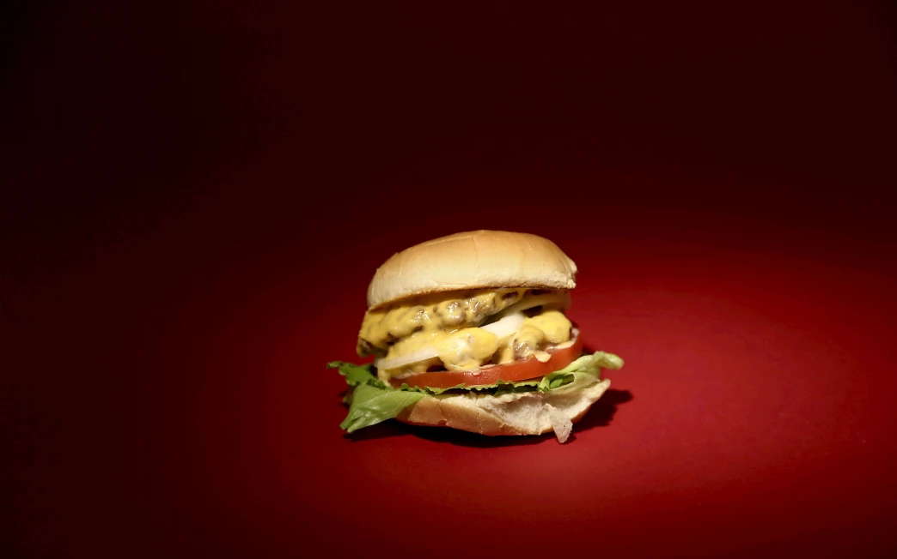

Home
In N Out Sauce

Description
Unofficial recipes taste better than the real thing
Ingredients
- 1/4 cup mayonnaise
- 3 tablespoon plus 2.5 teaspoons ketchup (scant 1/4 cup)
- 1 teaspoon yellow mustard
- 2 1/2 teaspoons dill pickle relish
- 2 1/2 teaspoons sweet pickle relish
- 1 teaspoon worcestershire sauce
- 1 teaspoon white wine vinegar
Steps
- In a medium bowl, stir together mayo, ketchup, mustard, sweet and dill relish, worcester sauce, and vinegar
- This makes about 1/2 cup sauce. Sauce will keep, covered and refridgerated, for up to 2 weeks
- Spread generously on your burger
- Eat and enjoy!